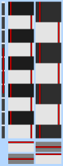
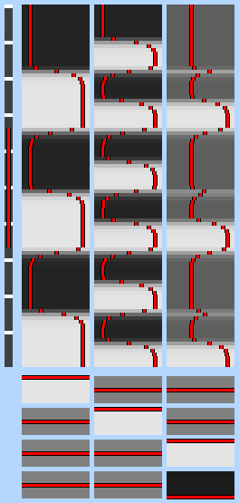

General Linear Modelling (more correctly known simply as "linear modelling") sets up a model (i.e., what you expect to see in the data) and fits it to the data. If the model is derived from the stimulation that was applied to the subject in the MRI scanner, then a good fit between the model and the data means that the data was indeed caused by the stimulation.
The GLM used here is univariate. This means that the model is fit to each voxel's time-course separately. (Multivariate would mean that a much more complex analysis would take place on all voxels' time-courses at the same time, and interactions between voxels would be taken into account. Independent Component Analysis - ICA - is an example of multivariate analysis.) For the rest of this section, you can imagine that we are only talking about one voxel, and the fitting of the model to that voxel's timecourse. Thus the data comprises a single 1D vector of intensity values.
A very simple example of linear modelling is y(t)=a*x(t)+b+e(t). y(t) is the data, and is a 1D vector of intensity values - one for each time point, i.e., is a function of time. x(t) is the model, and is also a 1D vector with one value for each time point. In the case of a square-wave block design, x(t) might be a series of 1s and 0s - for example, 0 0 0 0 0 1 1 1 1 1 0 0 0 0 0 etc. a is the parameter estimate for x(t), i.e., the value that the square wave (of height 1) must be multiplied by to fit the square wave component in the data. b is a constant, and in this example, would correspond to the baseline (rest) intensity value in the data. e is the error in the model fitting.
If there are two types of stimulus, the model would be y=a1*x1+a2*x2+b+e. Thus there are now two different model waveforms, corresponding to the two stimulus timecourses. There are also two interesting parameters to estimate, a1 and a2. Thus if a particular voxel reponds strongly to model x1 the model-fitting will find a large value for a1; if the data instead looks more like the second model timecourse, x2, then the model-fitting will give a2 a large value.
GLM is normally formulated in matrix notation. Thus all of the parameters are grouped together into a vector A, and all of the model timecourses are grouped together into a matrix X. However, it isn't too important to follow the matrix notation, except to understand the layout of the design matrix, which is the matrix X. The main part of the image shown here contains two such model timecourses. Each column is a different model timecourse, with time going down the image vertically. Thus the left column is x1, for example, the timecourse associated with visual stimulation, and the right column is x2, e.g., auditory stimulation, which has a different timecourse to the visual stimulation. Note that each column has two representations of the model's value - the black->white intensity shows the value, as does the red line plot. Make sure that you are comfortable with both representations.
When the model is fit to the data, for each voxel there will be found an estimate of the "goodness of fit" of each column in the model, to that voxel's timecourse. In the visual cortex, the first column will generate a high first parameter estimate, and the second column will generate a low second parameter estimate, as this part of the model will not fit the voxel's timecourse well. Each column will be known as an explanatory variable (EV), and in general represents a different stimulus type.
To convert estimates of parameter estimates (PEs) into statistical maps, it is necessary to divide the actual PE value by the error in the estimate of this PE value. This results in a t value. If the PE is low relative to its estimated error, the fit is not significant. Thus t is a good measure of whether we can believe the estimate of the PE value. All of this is done separately for each voxel. To convert a t value into a P (probability) or Z statistic requires standard statistical transformations; however, t, P and Z all contain the same information - they tell you how significantly the data is related to a particular EV (part of the model). Z is a "Gaussianised t", which means that a Z statistic of 2 is 2 standard deviations away from zero.
As well as producing images of Z values which tell you how strongly each voxel is related to each EV (one image per EV), you can compare parameter estimates to see if one EV is more "relevant" to the data than another. This is known as contrasting EVs, or producing contrasts. To do this, one PE is subtracted from another, a combined standard error is calculated, and a new Z image is created. All of the above is controlled by you, by setting up contrasts. Each output Z statistic image is generated by setting up a contrast vector; thus set the number of outputs that you want. To convert a single EV into a Z statistic image, set it's contrast value to 1 and all others to 0. Thus the simplest design, with one EV only, has just one contrast vector, and only one entry in this contrast vector: 1. To compare two EVs, for example, to subtract one stimulus type (EV 1) from another type (EV 2), set EV 1's contrast value to -1 and EV 2's to 1. A Z statistic image will be generated according to this request, answering the question "where is the response to stimulus 2 significantly greater than the response to stimulus 1?"
The bottom part of the above image shows the requested contrasts; each column refers to the weighting of the relevant EV (often either just 1, 0 or -1), and each row is a different contrast vector. Thus each row will result in it's own Z statistic image. Here the contrasts are [1 0] and [0 1]. Thus the first Z stat image produced will show response to stimulus type 1, relative to rest, and the second will show the response to stimulus type 2.
If you want to model nonlinear interactions between two EVs (for example, when you expect the response to two different stimuli when applied simultaneously to give a greater response than predicted by adding up the responses to the stimuli when applied separately), then an extra EV is necessary. The simplest way of doing this is to setup the two originals EVs, and then add an interaction term, which will only be "up" when both of the original EVs are "up", and "down" otherwise. In the example image, EV 1 could represent the application of drug, and EV 2 could represent visual stimulation. EV 3 will model the extent to which drug+visual is greater than the sum of drug-only and visual-only. The third contrast will show this measure, whilst the fourth contrast [0 0 -1] shows where negative interaction is occurring.
All of the EVs have to be independent of each other. This means that no EV can be a sum (or weighted sum) of other EVs in the design. The reason for this is that the maths which are used to fit the model to the data does not work properly unless the design matrix is of "full rank", i.e. all EVs are independent. A common mistake is to model both rest and activation waveforms, making one an upside-down version of the other; in this case EV 2 is -1 times EV 1, and therefore linearly dependent on it. It is only necessary to model the activation waveform.
With "parametric designs", there might be several different levels of stimulation, and you probably want to find the response to each level separately. Thus you should use a separate EV for each stimulation level. (If, however, you are very confident that you know the form of the response, and are not interested in confirming this, then you can create a custom waveform which will match the different stimulation levels, and only use one EV.) If you want to create different contrasts to ask different questions about these responses, then: [1 0 0] shows the response of level 1 versus rest (likewise [0 1 0] for level 2 vs rest and [0 0 1] for level 3). [-1 1 0] shows where the response to level 2 is greater than that for level 1. [-1 0 1] shows the general linear increase across all three levels. [1 -2 1] shows where the increase across all three levels deviates from being linear (this is derived from (l3-l2)-(l2-l1)=l3-2*l2+l1).
Thus there often exists a natural hierarchy in contrast vectors. In the above example, [1 1 1] shows overall activation, [-1 0 1] shows linear increase in activation and [1 -2 1] shows (quadratic) deviation from the linear trend. Note that each contrast is orthogonal to the others (e.g. -1*1 + 0*1 + 1*1 = 0) - this is important as it means that each is independent of the others. A common mistake might be, for example, to model the linear trend with [1 2 3], which is wrong as it mixes the average activation with the linear increase.